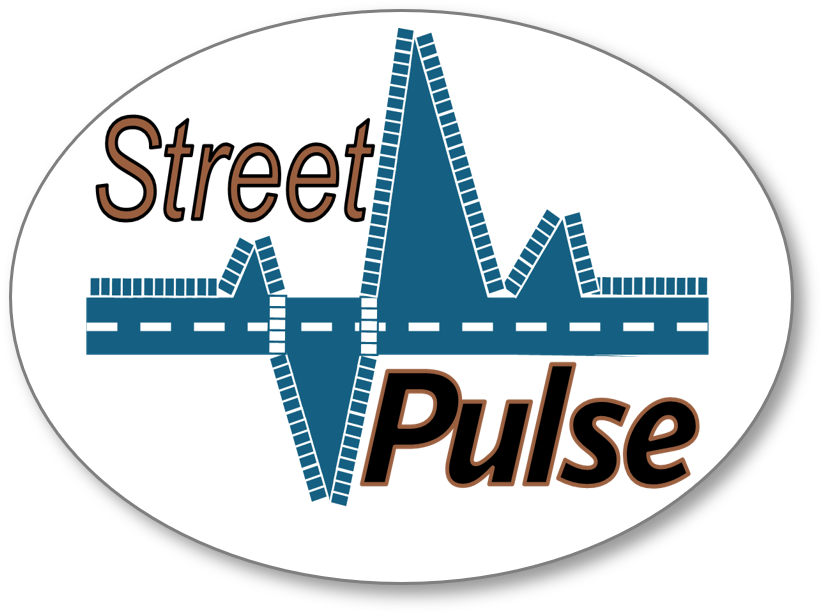
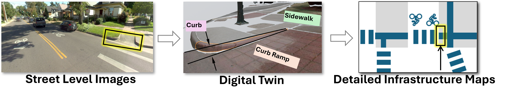

The goal of this program is to develop StreetPulse, a software system for generating and monitoring infrastructure data from street level imagery. The aim is to greatly decrease the time and effort needed to collect data needed to design, implement and evaluate transportation infrastructure policies. This effort will allow U.S. transportation agencies to efficiently make data‑driven decisions for transportation networks, leveraging advances in AI technologies.
